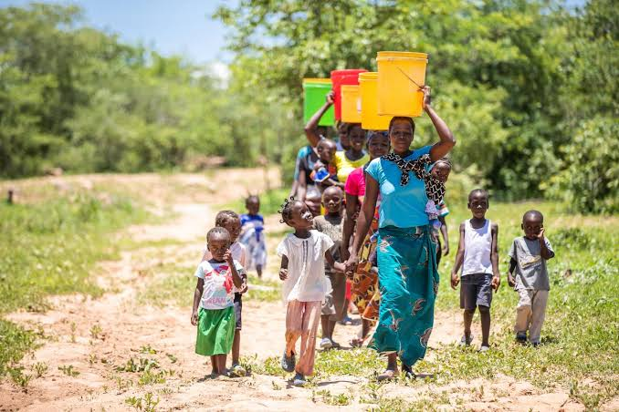

GLOBAL WARMING FACTS FOR AFRICAN CHILDREN
Welcome to the blog of Dolapo Arogun

WHAT IS A CARBON FOOTPRINT?
Carbon Footprint is defined as a measure of the total amount of greenhouse gas emissions released into the atmosphere because of the activities of an individual, company or community. Greenhouse gases are making our planet warmer and causing climate change. Your personal carbon footprint includes emissions from a variety of sources such as your daily commute, the food you eat, the clothes you buy, everything you throw away ... and more. The larger the carbon footprint, the heavier the impact on the environment.
Buildings, corporations, and countries have carbon footprints too. Carbon footprint includes direct emissions, such as those that result from fossil-fuel combustion in manufacturing, heating, and transportation, as well as emissions required to produce the electricity associated with goods and services consumed. A school’s carbon footprint is estimated based on the amount of electricity it uses, the school meals eaten by the students, and the items used like paper and pens.
Any process or activity that creates greenhouse gases is included in the calculation of carbon footprint. For example, a pencil manufactured in a fossil fuel burning factory has a carbon footprint even though we are oblivious to the fact that fossil fuel was used during the manufacturing. The same is true for food, - a plate of vegetable salad might seem to have no carbon footprint however, fossil fuel is used to transport the vegetables from the farm to the shop.

WHAT INCREASES OUR CARBON FOOTPRINT?
Our lifestyle choices have a direct impact on our carbon footprints. A person’s carbon footprint is the combined total of the products they buy and use, the activities they undertake, and so on. Our footprints increase with our food and electricity consumption, transport usage, heating, and cooling requirements etc. Some of the foods that produce the largest amount of CO2 are beef, cheese, and poultry. Beef is very carbon polluting, but it also depends on the distance from farm to the location of consumption. The farther the distance, the higher the emissions from transportation.
A person who regularly eats beef will have a larger food footprint than his vegan neighbour. However, the vegan neighbour’s overall footprint may be larger if he drives an hour to work and back in a truck everyday while the beef-eater walks to his office near his house. Their footprints will pale in comparison to the banker on the other side of town, who flies first-class cross-country once a month. In general terms the size of a person’s carbon footprint tends to increase with wealth.
There are many ways for an individual, corporations and communities to reduce their carbon footprint. The first step is to measure or come up with a fairly accurate carbon footprint estimate and then take actions to reduce it. Some online carbon footprint calculators are:
You will be asked to provide pieces of information such as: how you commute to work, your usual diet, how often you drive or fly, your household size, type of electricity the grid provides to you etc.

WHAT ARE THE WAYS TO REDUCE OUR CARBON FOOTPRINT?
Carbon footprints can be reduced by making “greener” lifestyle choices, changing purchasing/buying habits, and improving energy usage/efficiency. Switching transportation and energy use can have a direct impact on primary carbon footprints – Cycling or use of public transportation such as buses and trains, reduces an individual’s carbon footprint when compared with driving. Installing energy-efficient lighting, adding insulation in buildings, or using renewable energy sources to generate electricity can reduce the respective carbon footprints of individuals and corporations – Solar or wind power to generate electricity produces no direct carbon emissions. Individuals can reduce their secondary carbon footprint through lifestyle choices – Decreasing beef consumption and switching to products that require fewer carbon emissions to produce and transport.
Since there are myriads of ways to increase our carbon footprint, there are also several ways individuals especially children can reduce their carbon footprint and protect the environment. Some of the ways are:
- Make “green” choices – Recycle, Reuse and Reduce to reduce pollution and waste.
- Say “No” to single-use plastics – Use only reusable items such as water bottles, utensils, bags etc. Many of these single-use plastics end up in landfills and pollute the oceans.
- Find ways to use less electricity – Turn off lights in the bedroom, bathroom, living room and classroom when it is not required or there is no one there; Use only energy efficient bulbs; Do not leave the oven on for an hour before putting in your pizza etc. The good thing about electricity is one day, it might all be made from solar and wind power.
- Use less fossil fuel – Walk or cycle to school instead of driving a vehicle that uses fossil fuels. That will keep you healthy and the environment will thank you. If you must drive, consider carpooling and do not speed as it uses more fuel which increases emission.
- Reduce CO2 emissions – Everything we do creates emissions; Go camping instead of flying to an international destination; Make gifts instead of buying them; Repair broken items instead of replacing them with new ones. All these can really reduce your carbon footprint.
- Plant a tree – Trees breathe in CO2 and turn it into oxygen; By planting trees, you help suck more CO2 out of the atmosphere.
- Eat less beef – Meat, especially lamb and beef, has a large carbon footprint because of the high greenhouse gas emissions associated with rearing, processing, transporting, storing, and cooking animal products; A vegetarian diet has half the carbon footprint of a meat eater’s diet; Becoming vegetarian or eating less beef will reduce your carbon footprint.

Dolapo Arogun
Hello Children. My name is Dolapo Arogun. And I will like to take you on a journey to a cleaner energy future for mankind. Have you heard people on TVs talking about climate change? Ever wondered what it is and why we care about it so much? Well, I am here to help you understand what it all means, what is being done to address it and what we can all do to make a difference.
Popular Posts
-

What is Global Warming?
Global warming is the term used to describe the rising of the average global temperature of the Earth that started in the pre-Industrial era due to the heating of the Earth’s surface. The Earth’s warming trend has been going on for a very long time, but the rate of warming has significantly increased in the last century mainly due to human activities. Human activities such as burning of fossil fuels to generate power and manufacture goods are causing worldwide temperatures to rise higher and faster than any time we know of in the past. -
 Causes OF Global Warming
Causes OF Global Warming
The main factor contributing to climate change is human activities. This is because of the large number of greenhouse gases we produce due to our lifestyle choices. Some greenhouse gases occur naturally in the atmosphere and play a part in making our planet habitable. However, the large number of greenhouse gases we produce is too much for the environment to handle. -
 Effects of Global Warming
Effects of Global Warming
Warmer temperatures are gradually changing weather patterns and disrupting the normal balance of nature. Some of these changes such as heat waves, wildfires, prolonged drought, and extreme rainfall are happening faster than scientists previously predicted resulting in loss of lives, property damage and population displacement. Extreme weather and climate change pose many risks to human beings and all other forms of life on Earth.